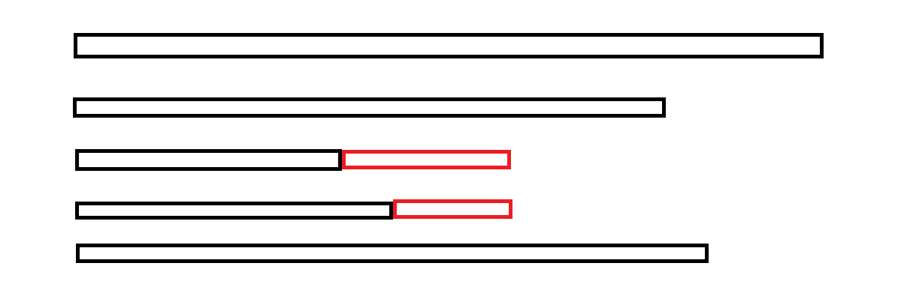

https://www.luogu.com.cn/training/111#problems
这个题单的名字就可以给人很大的启发，二分只是一种思考方式，具体来说有两种方式：
二分答案——当答案是单调的时候就可以考虑使用二分答案的方法了
二分查找
【深基13.例1】查找
题目描述
输入
输入格式
第一行
第二行
第三行
输出格式
输出一行，
样例 #1
样例输入 #1
111 321 3 3 3 5 7 9 11 13 15 1531 3 6
样例输出 #1
xxxxxxxxxx111 2 -1
提示
数据保证，
本题输入输出量较大，请使用较快的 IO 方式。
x1
3using namespace std;4const int N = 1000010;5int a[N];6int n, m;7
8int main() {9 cin >> n >> m;10 for (int i = 0; i < n; ++i)scanf("%d", &a[i]);11 while (m--) {12 int q, l = 0, r = n - 1;13 scanf("%d", &q);14 while (l < r) {15 int mid = l + r >> 1;16 if (a[mid] >= q)r = mid;17 else l = mid + 1;18 }19 if (a[l] == q)printf("%d ", l + 1);20 else printf("-1 ");21 }22 return 0;23} 就是普通的二分查找
A-B 数对
题目背景
出题是一件痛苦的事情！
相同的题目看多了也会有审美疲劳，于是我舍弃了大家所熟悉的 A+B Problem，改用 A-B 了哈哈！
题目描述
给出一串正整数数列以及一个正整数
输入格式
输入共两行。
第一行，两个正整数
第二行，
输出格式
一行，表示该串正整数中包含的满足
样例 #1
样例输入 #1
xxxxxxxxxx214 121 1 2 3
样例输出 #1
xxxxxxxxxx113
提示
对于
对于
2017/4/29 新添数据两组
双指针的做法
xxxxxxxxxx341
3typedef long long int LL;4using namespace std;5const int N = 2e5 + 10;6map<int, int> m;7int s[N];8
9int main() {10 int n, c;11 cin >> n >> c;12
13 for (int i = 0; i < n; ++i) {14 int a;15 scanf("%d", &a);16 m[a] += 1;17 }18
19 int k = 0;20 for (auto t: m) s[k++] = t.first;21 sort(s, s + k);22
23 long long int res = 0;24 for (int i = 0, j = 0; j < k;) {25 if (s[j] - s[i] < c) j++;26 else if (s[j] - s[i] == c) {27 res += (LL) m[s[j]] * m[s[i]];28 j++;29 i++;30 } else i++;31 }32 cout << res;33 return 0;34}二分查找的做法
xxxxxxxxxx351
3using namespace std;4const int N = 2e5 + 10;5int n, a[N], c;6long long int res;7
8void tt(int x) {9 x = c + x;10 int l = 0, r = n - 1;11 while (l < r) {12 int mid = l + r >> 1;13 if (a[mid] >= x) r = mid;14 else l = mid + 1;15 }16 if (a[l] != x) return;17 int ll = l;18 l = 0, r = n - 1;19 while (l < r) {20 int mid = l + r + 1 >> 1;21 if (a[mid] <= x) l = mid;22 else r = mid - 1;23 }24 int rr = l;25 res += rr - ll + 1;26 return;27}28
29int main() {30 cin >> n >> c;31 for (int i = 0; i < n; ++i) scanf("%d", &a[i]);32 sort(a, a + n);33 for (int i = 0; i < n; ++i) tt(a[i]);34 cout << res;35}这个题和AcWing上二分的题目有点类似
[COCI 2011/2012 #5] EKO / 砍树
题目描述
伐木工人 Mirko 需要砍
Mirko 的伐木机工作流程如下：Mirko 设置一个高度参数
Mirko 非常关注生态保护，所以他不会砍掉过多的木材。这也是他尽可能高地设定伐木机锯片的原因。请帮助 Mirko 找到伐木机锯片的最大的整数高度
输入格式
第
第
输出格式
样例 #1
样例输入 #1
xxxxxxxxxx214 7220 15 10 17
样例输出 #1
xxxxxxxxxx1115
样例 #2
样例输入 #2
xxxxxxxxxx215 2024 42 40 26 46
样例输出 #2
xxxxxxxxxx1136
提示
对于
xxxxxxxxxx261
3using namespace std;4const int N = 1e6 + 10;5int n;6long long int m, h[N];7
8bool check(int x) {9 long long int t = 0;10 for (int i = 0; i < n; ++i) t += h[i] > x ? h[i] - x : 0;11 if (t >= m) return true;12 else return false;13}14
15int main() {16 cin >> n >> m;17 for (int i = 0; i < n; ++i) scanf("%lld", &h[i]);18 int l = 0, r = 1e9;19 while (l < r) {20 int mid = l + r + 1 >> 1;21 if (check(mid)) l = mid;22 else r = mid - 1;23 }24 cout << l;25 return 0;26}这个题是二分答案的情况。
利用二分枚举每一个可能的答案进行判断
[NOIP2001 提高组] 一元三次方程求解
题目描述
有形如：
提示：记方程
输入格式
一行，
输出格式
一行，
样例 #1
样例输入 #1
xxxxxxxxxx111 -5 -4 20
样例输出 #1
xxxxxxxxxx11-2.00 2.00 5.00
提示
【题目来源】
NOIP 2001 提高组第一题
xxxxxxxxxx291
3using namespace std;4double a, b, c, d;5
6double f(double x) {7 return a * x * x * x + b * x * x + c * x + d;8}9
10void check(double x1, double x2) {11 double l = x1, r = x2, mid;12 while (r - l > 0.001) {13 mid = (l + r) / 2;14 if (f(l) * f(mid) > 0)l = mid;15 else r = mid;16 }17 printf("%.2lf ", l);18}19
20int main() {21 cin >> a >> b >> c >> d;22 for (double i = -100.1; i <= 100.01; i += 1) {23 if (f(i) * f(i + 1) <= 0) {24 check(i, i + 1);25 i += 0.00001;26 }27 }28 return 0;29}利用步进来确定二分的左右端点
注意：a、b、c、d是实数而非整数，需要用double存储
烦恼的高考志愿
题目背景
计算机竞赛小组的神牛 V 神终于结束了高考，然而作为班长的他还不能闲下来，班主任老 t 给了他一个艰巨的任务：帮同学找出最合理的大学填报方案。可是 v 神太忙了，身后还有一群小姑娘等着和他约会，于是他想到了同为计算机竞赛小组的你，请你帮他完成这个艰巨的任务。
题目描述
现有
根据
输入格式
第一行读入两个整数
第二行共有
输出格式
输出一行，为最小的不满度之和。
样例 #1
样例输入 #1
xxxxxxxxxx314 32513 598 567 6893500 600 550
样例输出 #1
xxxxxxxxxx1132
提示
数据范围：
对于
对于
xxxxxxxxxx321
3using namespace std;4const int N = 1e5 + 10;5int n, m, a[N];6long long int res;7
8void tt(int u) {9 int l = 0, r = m - 1;10 while (l < r) {11 int mid = l + r + 1 >> 1;12 if (a[mid] <= u) l = mid;13 else r = mid - 1;14 }15 if (l == 0 && a[l] > u) res += a[l] - u;16 else if (l == m - 1) res += u - a[l];17 else res += min(u - a[l], a[l + 1] - u);18 return;19}20
21int main() {22 cin >> m >> n;23 for (int i = 0; i < m; ++i) scanf("%d", &a[i]);24 sort(a, a + m);25 for (int i = 0; i < n; ++i) {26 int b;27 scanf("%d", &b);28 tt(b);29 }30 cout << res;31 return 0;32}对于每一个同学的成绩，利用二分查找到第一个分数线比他预估分数低的学校，比较即可
注意特判分数线最低和分数线最高的情况
木材加工
题目背景
要保护环境
题目描述
木材厂有
当然，我们希望得到的小段木头越长越好，请求出
木头长度的单位是
例如有两根原木长度分别为
输入格式
第一行是两个正整数
接下来
输出格式
仅一行，即
如果连 0。
样例 #1
样例输入 #1
xxxxxxxxxx413 7223231244456
样例输出 #1
xxxxxxxxxx11114
提示
数据规模与约定
对于
xxxxxxxxxx281
3using namespace std;4const int N = 1e5 + 10;5int n, k, a[N];6
7bool check(int u) {8 int res = 0;9 for (int i = 0; i < n; ++i) {10 res += a[i] / u;11 }12 if (res >= k) return true;13 else return false;14}15
16int main() {17 cin >> n >> k;18 for (int i = 0; i < n; ++i) scanf("%d", &a[i]);19
20 int l = 0, r = 1e8 + 10;21 while (l < r) {22 int mid = l + r + 1 >> 1;23 if (check(mid)) l = mid;24 else r = mid - 1;25 }26 cout << l;27 return 0;28} 这个题目属于是二分答案。
[NOIP2015 提高组] 跳石头
题目背景
一年一度的“跳石头”比赛又要开始了!
题目描述
这项比赛将在一条笔直的河道中进行，河道中分布着一些巨大岩石。组委会已经选择好了两块岩石作为比赛起点和终点。在起点和终点之间，有
为了提高比赛难度，组委会计划移走一些岩石，使得选手们在比赛过程中的最短跳跃距离尽可能长。由于预算限制，组委会至多从起点和终点之间移走
输入格式
第一行包含三个整数
接下来
输出格式
一个整数，即最短跳跃距离的最大值。
样例 #1
样例输入 #1
xxxxxxxxxx6125 5 222311414517621
样例输出 #1
xxxxxxxxxx114
提示
输入输出样例 1 说明
将与起点距离为
数据规模与约定
对于
对于
对于
xxxxxxxxxx461
3using namespace std;4const int N = 5e4 + 10;5int l, m, n, a[N];6
7bool check(int u) {8 int res = 0;9 int b[N];10 memcpy(b, a, sizeof b);11 for (int i = 1; i <= n + 1; ++i) {12 if (b[i] < u) {13 b[i + 1] += b[i];14 res++;15 }16 }17 if (res <= m) return true;18 else return false;19}20
21int main() {22 cin >> l >> n >> m;23 if (n == 0) {24 cout << l;25 return 0;26 }27 for (int i = 1; i <= n; ++i) scanf("%d", &a[i]);28 a[n + 1] = l - a[n];29 for (int i = n; i > 0; --i) a[i] = a[i] - a[i - 1];30 if (m == 0) {31 int minn = 1e9 + 9;32 for (int i = 1; i <= n + 1; i++) {33 minn = min(minn, a[i]);34 }35 cout << minn;36 return 0;37 }38 int l = 0, r = 1e9 + 3;39 while (l < r) {40 int mid = l + r + 1 >> 1;41 if (check(mid)) l = mid;42 else r = mid - 1;43 }44 cout << l;45 return 0;46}这个题也是二分答案。
具体来说就是枚举每一个可能结果，判断是否是答案，只不过这里是根据二分进行枚举，会非常快。
a[0]是起点，a[n+1]是终点
a[i]表示的是第i个石头距离第i-1个石头的距离
每次判断当前的石头是否可以删除，记得要把下一个石头的距离更新。
代码删除终点的操作逻辑上是删除终点的上一个，也就是最后一个石头。这里会把距离更新到下一个石头，虽然这个石头逻辑上不存在，但是不影响前面的判断。
[TJOI2007]路标设置
题目背景
B 市和 T 市之间有一条长长的高速公路，这条公路的某些地方设有路标，但是大家都感觉路标设得太少了，相邻两个路标之间往往隔着相当长的一段距离。为了便于研究这个问题，我们把公路上相邻路标的最大距离定义为该公路的“空旷指数”。
题目描述
现在政府决定在公路上增设一些路标，使得公路的“空旷指数”最小。他们请求你设计一个程序计算能达到的最小值是多少。请注意，公路的起点和终点保证已设有路标，公路的长度为整数，并且原有路标和新设路标都必须距起点整数个单位距离。
输入格式
第
第
输出格式
输出
样例 #1
样例输入 #1
xxxxxxxxxx21101 2 120 101
样例输出 #1
xxxxxxxxxx1151
提示
公路原来只在起点和终点处有两个路标，现在允许新增一个路标，应该把新路标设在距起点
xxxxxxxxxx431
3using namespace std;4const int N = 1e5 + 10;5int n, k, L, a[N];6
7bool check(int x) {8 if (x == 0) return false;9 long long int res = 0;10 for (int i = 1; i <= n; ++i) {11 if (a[i] == 0) continue;12 if (a[i] > x) {13 if (a[i] % x == 0) res--;14 res += a[i] / x;// 注意这里要大于指数才可以除 15 }16 }17 if (res > k) return false;18 else return true;19}20
21int main() {22 cin >> L >> n >> k;23 for (int i = 1; i <= n; ++i) scanf("%d", &a[i]);24 if (a[n] != L) {25 a[n + 1] = L;26 n++;27 }28 for (int i = n; i > 1; --i) a[i] -= a[i - 1];29 if (k == 0) {30 int maxx = 0;31 for (int i = 1; i <= n; ++i) maxx = max(maxx, a[i]);32 cout << maxx;33 return 0;34 }35 int l = 0, r = L;36 while (l < r) {37 int mid = l + r >> 1;38 if (check(mid)) r = mid;39 else l = mid + 1;40 }41 cout << l;42 return 0;43}经过排查终于找到了之前程序的bug。
之前的程序最后一个hack测试点一直过不去，hack测试点一直报告浮点数错误。经过排查之后发现，所谓的浮点数错误实际上就是除数是0导致的。
虽然hack测试点不可见，但是推测一下可能的测试集：
xxxxxxxxxx311 2 12320 13// 该测试集表示路总长为1，有两个路标，可以再添加123个路标
按照上述测试集，原有代码会发生除数是0的情况，同时没有在check函数内部检查参数x是否为0。
数列分段 Section II
题目描述
对于给定的一个长度为N的正整数数列
关于最大值最小：
例如一数列
将其如下分段：
第一段和为
将其如下分段：
第一段和为
并且无论如何分段，最大值不会小于
所以可以得到要将数列
输入格式
第
第
输出格式
一个正整数，即每段和最大值最小为多少。
样例 #1
样例输入 #1
xxxxxxxxxx215 324 2 4 5 1
样例输出 #1
xxxxxxxxxx116
提示
对于
对于
对于
xxxxxxxxxx361
3using namespace std;4const int N = 1e5 + 10;5int n;6long long int h[N], m;7
8bool check(long long int x) {9 long long int res = 0;10 int ans = 0;11 for (int i = 0; i < n; ++i) {12 if (h[i] > x) return false;13 if (res + h[i] > x) {14 ans++;15 res = h[i];16 } else {17 res += h[i];18 }19 }20 if (res) ++ans;21 if (ans <= m) return true;22 else return false;23}24
25int main() {26 cin >> n >> m;27 for (int i = 0; i < n; ++i) scanf("%lld", &h[i]);28 long long int l = 0, r = 1e17;29 while (l < r) {30 long long int mid = l + r >> 1;31 if (check(mid)) r = mid;32 else l = mid + 1;33 }34 cout << l;35 return 0;36}ans用来判断分组
res是每个分段的和
银行贷款
题目描述
当一个人从银行贷款后，在一段时间内他（她）将不得不每月偿还固定的分期付款。这个问题要求计算出贷款者向银行支付的利率。假设利率按月累计。
输入格式
三个用空格隔开的正整数。
第一个整数表示贷款的原值，第二个整数表示每月支付的分期付款金额，第三个整数表示分期付款还清贷款所需的总月数。
输出格式
一个实数，表示该贷款的月利率（用百分数表示），四舍五入精确到
样例 #1
样例输入 #1
xxxxxxxxxx111000 100 12
样例输出 #1
xxxxxxxxxx112.9
提示
数据保证，
xxxxxxxxxx251
3using namespace std;4double total, part, l = 0, r = 10, mid;5int month;6
7bool check() {8 double sum = 0;9 for (int i = 1; i <= month; ++i) {10 sum += part / pow(1 + mid, i);11 }12 if (sum >= total)return true;13 return false;14}15
16int main() {17 cin >> total >> part >> month;18 while (r - l > 0.00001) {19 mid = (l + r) / 2;20 if (check()) l = mid;21 else r = mid;22 }23 printf("%.1lf", mid * 100);24 return 0;25}
kotori的设备
题目背景
kotori 有
题目描述
第
同时 kotori 又有一个可以给任意一个设备充电的充电宝，每秒可以给接通的设备充能
kotori 想把这些设备一起使用，直到其中有设备能量降为
输入格式
第一行给出两个整数
接下来
输出格式
如果 kotori 可以无限使用这些设备，输出
否则输出 kotori 在其中一个设备能量降为
设你的答案为
样例 #1
样例输入 #1
xxxxxxxxxx312 122 232 1000
样例输出 #1
xxxxxxxxxx112.0000000000
样例 #2
样例输入 #2
xxxxxxxxxx211 10021 1
样例输出 #2
xxxxxxxxxx11-1
样例 #3
样例输入 #3
xxxxxxxxxx413 524 335 246 1
样例输出 #3
xxxxxxxxxx110.5000000000
提示
对于
xxxxxxxxxx391
3using namespace std;4const int N = 1e5 + 10;5struct tt {6 int a, b;7} ti[N];8int n;9double p;10
11bool check(double x) {12 double chong = p * x;13 for (int i = 0; i < n; ++i) {14 chong -= ti[i].a * x > ti[i].b ? ti[i].a * x - ti[i].b : 0;15 }16 if (chong < 0) return false;17 else return true;18}19
20int main() {21 cin >> n >> p;22 long long int tot = 0;23 for (int i = 0; i < n; ++i) {24 scanf("%d%d", &ti[i].a, &ti[i].b);25 tot += ti[i].a;26 }27 if (tot <= p) {28 cout << -1;29 return 0;30 }31 double l = 0, r = 3000000001.0;32 while (r - l > 0.00001) {33 double mid = (l + r) / 2;34 if (check(mid)) l = mid;35 else r = mid;36 }37 printf("%lf\n", l);38 return 0;39}本题也是二分答案
首先要注意tot会爆int，所以要开long long int
其次是要熟悉double型的二分过程，double型的二分过程右端点可以取到3000000001.0，取小了会导致一些答案错误

[NOIP2004 提高组] 合唱队形
题目描述
合唱队形是指这样的一种队形：设
你的任务是，已知所有
输入格式
共二行。
第一行是一个整数
第二行有
输出格式
一个整数，最少需要几位同学出列。
样例 #1
样例输入 #1
xxxxxxxxxx2182186 186 150 200 160 130 197 220
样例输出 #1
xxxxxxxxxx114
提示
对于
对于全部的数据，保证有

DP：最长上升子序列做法（带二分优化）
xxxxxxxxxx471
3using namespace std;4const int N = 110;5int n, a[N], q1[N], q2[N], ll[N], rr[N];6
7void solve() {8 cin >> n;9 for (int i = 0; i < n; ++i) scanf("%d", &a[i]);10 int len1 = 0;11 q1[0] = -2e9;12 for (int i = 0; i < n; ++i) {13 int l = 0, r = len1;14 while (l < r) {15 int mid = l + r + 1 >> 1;16 if (q1[mid] < a[i]) l = mid;17 else r = mid - 1;18 }19 len1 = max(len1, r + 1);20 q1[r + 1] = a[i];21 ll[i] = len1;22 }23
24 int len2 = 0;25 q2[0] = -2e9;26 for (int i = n - 1; i >= 0; --i) {27 int l = 0, r = len2;28 while (l < r) {29 int mid = l + r + 1 >> 1;30 if (q2[mid] < a[i]) l = mid;31 else r = mid - 1;32 }33 len2 = max(r + 1, len2);34 q2[r + 1] = a[i];35 rr[i] = len2;36 }37 int res = 0;38 for (int i = 0; i < n - 1; ++i) {39 if (a[i] < a[i + 1]) res = max(res, ll[i] + rr[i + 1]);40 }41 cout << (res != 0 ? n - res : len1 + len2) << endl;42}43
44int main() {45 solve();46 return 0;47}
DP：最长上升子序列做法（不带二分优化）
xxxxxxxxxx331
6using namespace std;7const int N = 110;8
9int n;10int h[N];11int f[N], g[N];12
13int main() {14 scanf("%d", &n);15 for (int i = 1; i <= n; i++) scanf("%d", &h[i]);16 for (int i = 1; i <= n; i++) {17 f[i] = 1;18 for (int j = 1; j < i; j++)19 if (h[j] < h[i])20 f[i] = max(f[i], f[j] + 1);21 }22
23 for (int i = n; i; i--) {24 g[i] = 1;25 for (int j = n; j > i; j--)26 if (h[j] < h[i])27 g[i] = max(g[i], g[j] + 1);28 }29 int res = 0;30 for (int i = 1; i <= n; i++) res = max(res, f[i] + g[i] - 1);31 printf("%d\n", n - res);32 return 0;33}
寻找段落
题目描述
给定一个长度为
段落的平均值 等于 段落总价值 除以 段落长度。
输入格式
第一行一个整数
第二行两个整数
第三行到第
输出格式
一个实数，保留
样例 #1
样例输入 #1
xxxxxxxxxx51322 2334-152
样例输出 #1
xxxxxxxxxx111.000
提示
【数据范围】
对于
对于
【题目来源】
tinylic 改编
xxxxxxxxxx321
3using namespace std;4const int N = 1e5 + 10;5int n, a[N], s, t;6double f[N];7
8bool check(double mid) {9 for (int i = 1; i <= n; ++i) f[i] = f[i - 1] + (double) a[i] - mid;10 int hh = 1, tt = 0, q[N];11 // 队列中始终保持最小值12 for (int i = s; i <= n; ++i) {13 while (hh <= tt && f[q[tt]] > f[i - s]) tt--;14 q[++tt] = i - s;15 while (hh <= tt && q[hh] < i - t) hh++;16 if (hh <= tt && f[i] - f[q[hh]] > 0) return true;17 }18 return false;19}20
21int main() {22 cin >> n >> s >> t;23 for (int i = 1; i <= n; ++i) scanf("%d", &a[i]);24 double l = -2e9, r = 2e9;25 while (r - l > 0.00001) {26 double mid = (l + r) / 2.0;27 if (check(mid)) l = mid;28 else r = mid;29 }30 printf("%.3lf", l);31 return 0;32}
红色线段是我们要维护的单调队列，队列内部维护一个最小值。
书的复制
题目背景
大多数人的错误原因：尽可能让前面的人少抄写，如果前几个人可以不写则不写，对应的人输出 0 0 。
不过，已经修改数据，保证每个人都有活可干。
题目描述
现在要把
现在请你设计一种方案，使得复制时间最短。复制时间为抄写页数最多的人用去的时间。
输入格式
第一行两个整数
第二行
输出格式
共
样例 #1
样例输入 #1
xxxxxxxxxx219 321 2 3 4 5 6 7 8 9
样例输出 #1
xxxxxxxxxx311 526 738 9
提示
xxxxxxxxxx541
3using namespace std;4
5const int N = 550;6int m, k, q[N], a[N];7typedef pair<int, int> PII;8
9bool check(int mid) {10 int res = 0;11 int num = 1;12 for (int i = 0; i < m; ++i) {13 if (a[i] > mid) return false;14 if (res + a[i] <= mid) res += a[i];15 else {16 num++;17 res = a[i];18 }19 }20 if (num <= k) return true;21 else return false;22}23
24int main() {25 cin >> m >> k;26 for (int i = 0; i < m; ++i) cin >> a[i];27 int l = 0, r = 2e9;28 while (l < r) {29 int mid = l + r >> 1;30 if (check(mid)) r = mid;31 else l = mid + 1;32 }33 stack<PII> s;34 int res = 0;35 int ed = m;36 for (int i = m - 1; i >= 0; --i) {37 if (res + a[i] > l) {38 s.push({i + 2, ed});39 res = a[i];40 ed = i + 1;41 } else {42 res += a[i];43 }44 }45 if (res) {46 s.push({1, ed});47 }48 while (s.size()) {49 auto t = s.top();50 s.pop();51 cout << t.first << " " << t.second << endl;52 }53 return 0;54}注意题目中要求：尽可能让前面的人少抄写
营救
题目背景
“咚咚咚……”“查水表！”原来是查水表来了，现在哪里找这么热心上门的查表员啊！小明感动得热泪盈眶，开起了门……
题目描述
妈妈下班回家，街坊邻居说小明被一群陌生人强行押上了警车！妈妈丰富的经验告诉她小明被带到了
该市有
输入格式
第一行有四个用空格隔开的
接下来
两个区之间可能存在多条大道。
输出格式
输出一行一个整数，代表最大的拥挤度。
样例 #1
样例输入 #1
xxxxxxxxxx413 3 1 321 2 232 3 141 3 3
样例输出 #1
xxxxxxxxxx112
提示
数据规模与约定
对于
对于
对于
样例输入输出 1 解释
小明的妈妈要从
二分答案+并查集判断
xxxxxxxxxx411
3using namespace std;4
5const int N = 2e4 + 10;6int n, m, s, t, p[N];7struct node {8 int u, v, w;9} a[N];10
11int find(int x) {12 if (p[x] != x) p[x] = find(p[x]);13 return p[x];14}15
16bool check(int mid) {17 for (int i = 1; i <= n; ++i) p[i] = i;18 for (int i = 0; i < m; ++i) {19 if (a[i].w <= mid) {20 int aa = find(a[i].u), bb = find(a[i].v);21 if (aa != bb) {22 p[aa] = bb;23 }24 }25 }26 return find(s) == find(t);27}28
29int main() {30 cin >> n >> m >> s >> t;31 for (int i = 0; i < m; ++i) {32 cin >> a[i].u >> a[i].v >> a[i].w;33 }34 int l = 0, r = 1e4 + 5;35 while (l < r) {36 int mid = l + r >> 1;37 if (check(mid)) r = mid;38 else l = mid + 1;39 }40 cout << l << endl;41}
KC 喝咖啡
题目描述
话说 KC 和 SH 在福州的时候常常跑去 85°C 喝咖啡或者其他的一些什么东西。
这天，KC 想要喝一杯咖啡，服务员告诉他，现在有
KC 在得知所有的
现在，KC 把调料信息告诉了 SH，要 SH 帮他算出喝到的咖啡的
注释：
输入格式
输入数据共三行。
第一行为一个整数
接下来两行，每行为
输出格式
一个实数
样例 #1
样例输入 #1
xxxxxxxxxx313 221 2 333 2 1
样例输出 #1
xxxxxxxxxx111.667
提示
样例 1 解释：
KC 选
可以验证不存在更优的选择。
数据范围：
对
对
对
对
数据保证答案不超过
二分答案+贪心判断
xxxxxxxxxx441
3using namespace std;4const int N = 210;5
6struct node {7 double v, c;8 double b;9
10 bool operator<(const node &w) const {11 return b < w.b;12 }13} a[N];14
15int n, m;16
17bool check(double mid) {18 for (int i = 0; i < n; ++i) {19 a[i].b = a[i].c * mid - a[i].v;20 }21 sort(a, a + n);22 double vv = 0, cc = 0;23 for (int i = 0; i < m; ++i) {24 vv += a[i].v;25 cc += a[i].c;26 }27 if (vv / cc > mid)return true;28 else return false;29}30
31int main() {32 cin >> n >> m;33 for (int i = 0; i < n; ++i) cin >> a[i].v;34 for (int i = 0; i < n; ++i) cin >> a[i].c;35
36 double l = 0, r = 1001;37 while (r - l > 0.00001) {38 double mid = (l + r) / 2.0;39 if (check(mid)) l = mid;40 else r = mid;41 }42 printf("%.3lf", r);43 return 0;44}
LIS
题面翻译
给定一个长为
题目描述
数列
输入格式
输出格式
样例 #1
样例输入 #1
xxxxxxxxxx21523 1 5 4 2
样例输出 #1
xxxxxxxxxx112
样例 #2
样例输入 #2
xxxxxxxxxx21621 2 3 4 5 6
样例输出 #2
xxxxxxxxxx116
样例 #3
样例输入 #3
xxxxxxxxxx21727 6 5 4 3 2 1
样例输出 #3
xxxxxxxxxx111
样例 #4
样例输入 #4
xxxxxxxxxx2120219 11 10 7 8 9 17 18 20 4 3 15 16 1 5 14 6 2 13 12
样例输出 #4
xxxxxxxxxx116
提示
制約
xxxxxxxxxx241
3using namespace std;4
5const int N = 1e5 + 10;6int n, a[N], q[N];7
8int main() {9 cin >> n;10 for (int i = 0; i < n; ++i) cin >> a[i];11 int len = 0;12 for (int i = 0; i < n; ++i) {13 int l = 0, r = len;14 while (l < r) {15 int mid = l + r + 1 >> 1;16 if (q[mid] < a[i]) l = mid;17 else r = mid - 1;18 }19 len = max(len, r + 1);20 q[r + 1] = a[i];21 }22 cout << len << endl;23 return 0;24}